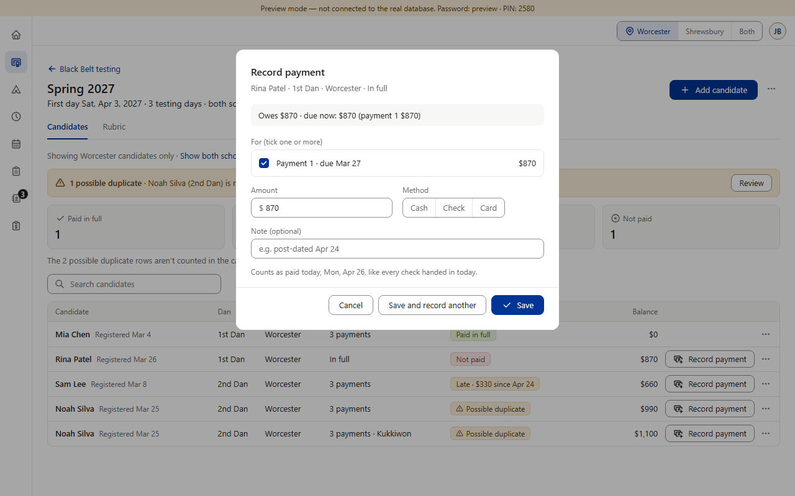
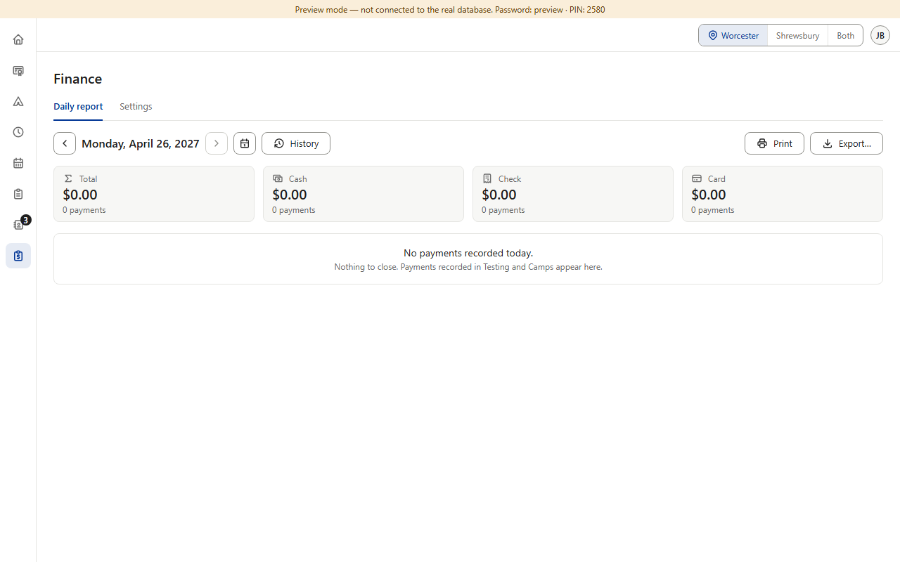
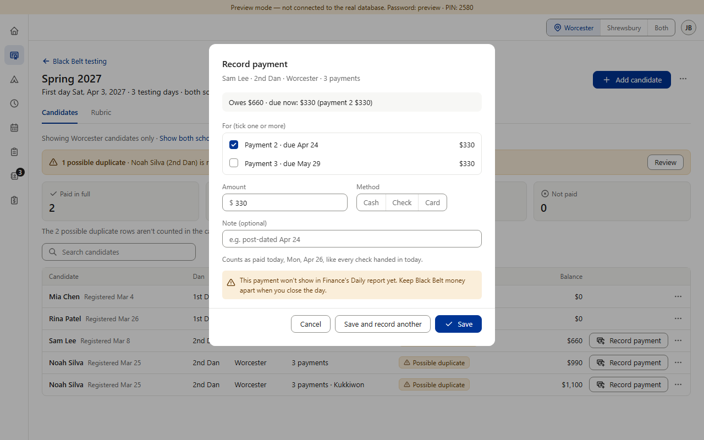
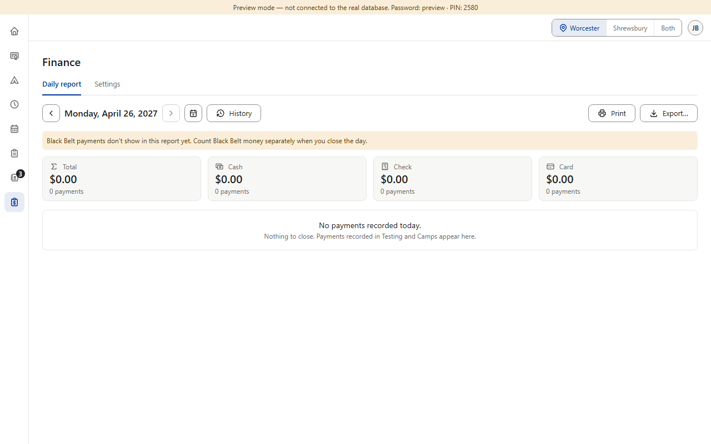
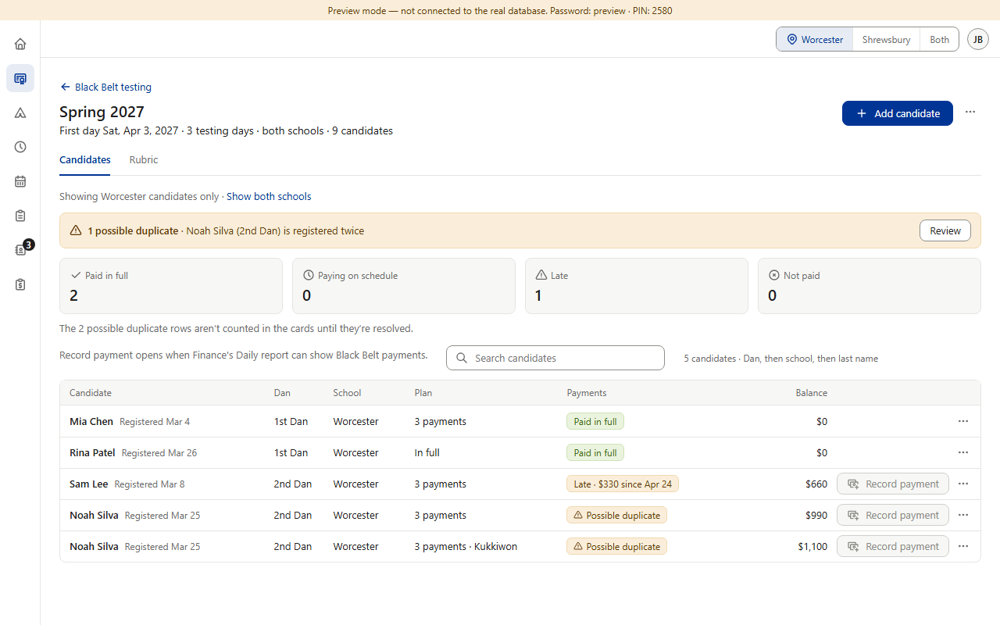

From item 1; for Finance and Black Belt. Finance adds Black Belt payments to the Daily report and Close the day “when Black Belt payments exist” (v0.808; returned checks v0.809). They exist now: Black Belt's Record payment has been live since Oct 21, and Finance's status still lists the step as “when Black Belt payments exist” (it needs its own migration). Pictures 1–2, in the preview on a pretend Monday, Apr 26, 2027: $870 cash recorded for Rina Patel at Worcester; that day's Worcester Daily report says “No payments recorded today. Nothing to close.” — the $870 is in the drawer but not in the report. On the live site Black Belt's family form is still off (it is switched on at Black Belt's CP6, for Spring 2027); the staff screens are live, so a payment could be recorded once a cycle exists. (Preview screenshots · PC size · fake data)




